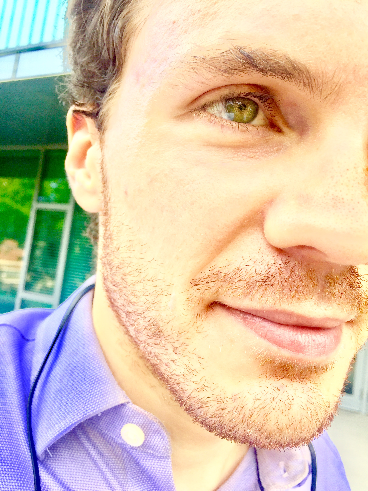

|  |
I am a postdoctoral fellow at Tsinghua University in Beijing. Previously, I received my PhD in pure maths at Harvard University. This site is under construction. My undergraduate education comprised a BA in pure maths (the mathematical tripos) and an MMath degree (Part III) from Trinity College, Cambridge. I can be contacted at max.c.menzies at gmail dot com, or WeChat as username max-menzies. My Chinese name is 孟思哲。 |
I am interested in both pure and applied maths. In pure maths, I've studied algebraic number theory and arithmetic geometry for many years, particularly p-curvature. In applied mathematics, I have the honour to work with my best friend for 25 years, Nick James. We're working on using pure mathematical techniques in problems phrased in statistics but with an applied mathematics flavour, with many experiments.
Apart from climate change, nothing is more important than accessibility of research, education, and information. I encourage all academics to submit their work to an open access archive such as arXiv. All my papers can be found on my personal arXiv page. My ORCID iD is 0000-0002-9907-8435.
Optimally adaptive Bayesian spectral density estimation, with Nick James. 2020, submitted.
Equivalence relations and L^p distances between time series, with Nick James. 2020, submitted.
Semi-metric portfolio optimisation: a new algorithm reducing simultaneous asset shocks, with Nick James and Jennifer Chan, 2020, submitted.
Identifying similarity and anomalies for cryptocurrency moments and distribution extremities, with Nick James and Jennifer Chan, 2019, submitted.
Novel semi-metrics for multivariate change point analysis and anomaly detection, with Nick James, Lamiae Azizi and Jennifer Chan, 2019, submitted.
The p-curvature conjecture for the non-abelian Gauss-Manin connection, 2019, submitted.
Frank Knox Memorial Fellowship, Harvard University, 2013. Home Website.
G.F.A Osborn Prize for first in second year mathematics, Trinity College, 2011.
T.G. Room Award for first in Extension 2 mathematics, NSW, 2008.
Teaching Fellow (lecturer) for Math 1b: Calculus, Series, and Differential Equations, Harvard University, spring 2018
Teaching Fellow (lecturer) for Math 21a: Multivariable Calculus, Harvard University, spring 2017
Graduate Calculus Fellow (tutor) for Math 1a: Introduction to Calculus, Harvard University spring 2016
Math Question Center tutor for Math 21b: Linear Algebra and Differential Equations, Harvard University, spring 2015
Mentor, Advanced Mentoring Scheme, UK Mathematics Trust, 2009-2012
Lecturer, Australian IMO Team Selection School, 2009-2011
I passed HSK 4, the Mandarin Chinese equivalent of B2, in December 2019. I am learning quite actively.
Years ago, I finished the Duolingo courses in French and Spanish. I am now out of practice.
Many years ago, I did Latin and Greek in high school. I'm not the only person simultaneously interested in maths and Greek...